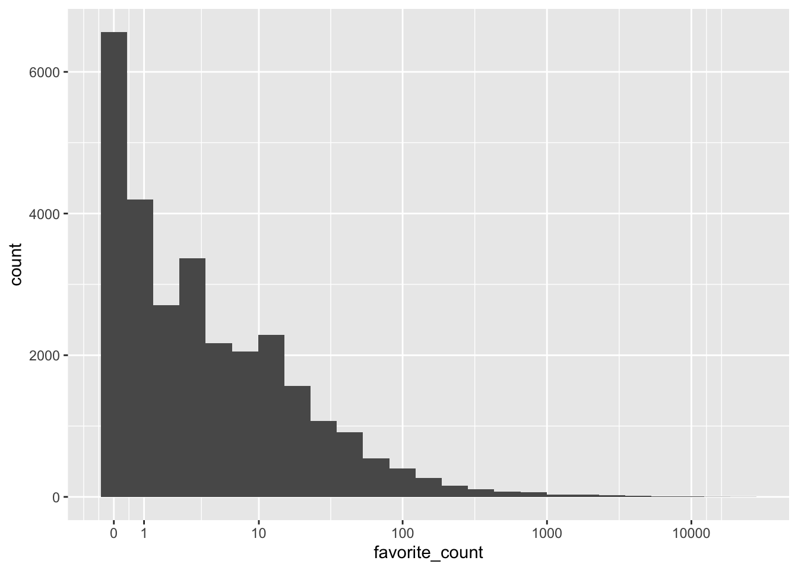

tweets <- readRDS("ncod_tweets.rds")
favourite_summary <- summarise(tweets,
mean_favs = mean(favorite_count),
median_favs = median(favorite_count),
min_favs = min(favorite_count),
max_favs = max(favorite_count))#Social media data and summarise ()
tweet_summary <- tweets %>%
summarise(mean_favs = mean(favorite_count),
median_favs = quantile(favorite_count, .5),
n = n(),
min_date = min(created_at),
max_date = max(created_at))
glimpse(tweet_summary)Rows: 1
Columns: 5
$ mean_favs <dbl> 29.71732
$ median_favs <dbl> 3
$ n <int> 28626
$ min_date <dttm> 2021-10-10 00:10:02
$ max_date <dttm> 2021-10-12 20:12:27GGPLOT of favorite_count
ggplot(tweets, aes(x = favorite_count)) +
geom_histogram(bins = 25) +
scale_x_continuous(trans = "pseudo_log", #it goes up in intervals of magnitude and it helps see how much is between each interval
breaks = c(0, 1, 10, 100, 1000, 10000))
tweets$source[2] #displays the second value in the row[1] "Twitter for iPhone"# %>% this is a pipe operator and it can be used to send output from one function into another
tweet_summary <- tweets %>% # start with the object tweets and then
summarise(mean_favs = mean(favorite_count), #summarise it
median_favs = median(favorite_count))tweet_summary <- tweets %>%
summarise(mean_favs = mean(favorite_count),
median_favs = quantile(favorite_count, .5),
n = n(),
min_date = min(created_at),
max_date = max(created_at))
glimpse(tweet_summary)Rows: 1
Columns: 5
$ mean_favs <dbl> 29.71732
$ median_favs <dbl> 3
$ n <int> 28626
$ min_date <dttm> 2021-10-10 00:10:02
$ max_date <dttm> 2021-10-12 20:12:27tweet_summary$mean_favs #The $ operator[1] 29.71732#inline coding is also very helpful when it comes to writing paper.
#You use `r'
date_from <- tweet_summary$min_date %>%
format("%d %B, %Y")
date_to <- tweet_summary$max_date %>%
format("%d %B, %Y")There were 28626 tweets between 10 October, 2021 and 12 October, 2021.
verified <-
tweets %>% # Start with the original dataset; and then
group_by(verified) %>% # group it; and then
summarise(count = n(), # summarise it by those groups
mean_favs = mean(favorite_count),
mean_retweets = mean(retweet_count)) %>%
ungroup()
verified# A tibble: 2 × 4
verified count mean_favs mean_retweets
<lgl> <int> <dbl> <dbl>
1 FALSE 26676 18.4 1.83
2 TRUE 1950 184. 21.5 most_fav <- tweets %>%
group_by(is_quote) %>%
filter(favorite_count == max(favorite_count)) %>%
sample_n(size = 1) %>%
ungroup()#Inline coding 2
tweets_per_user <- tweets %>%
count(screen_name, sort = TRUE)
head(tweets_per_user)# A tibble: 6 × 2
screen_name n
<chr> <int>
1 interest_outfit 35
2 LeoShir2 33
3 NRArchway 32
4 dr_stack 32
5 bhavna_95 25
6 WipeHomophobia 23unique_users <- nrow(tweets_per_user)
most_prolific <- slice(tweets_per_user, 1) %>%
pull(screen_name)
most_prolific_n <- slice(tweets_per_user, 1) %>%
pull(n)There were 25189 unique accounts tweeting about #NationalComingOutDay. interest_outfit was the most prolific tweeter, with 35 tweets.
#Extra challenge problem
ny_data <- readr::read_csv("New_York_City_Leading_Causes_of_Death.csv")Rows: 1094 Columns: 7
── Column specification ────────────────────────────────────────────────────────
Delimiter: ","
chr (6): Leading Cause, Sex, Race Ethnicity, Deaths, Death Rate, Age Adjuste...
dbl (1): Year
ℹ Use `spec()` to retrieve the full column specification for this data.
ℹ Specify the column types or set `show_col_types = FALSE` to quiet this message.corrected_nydata <-cols(
Year = col_double(),
`Leading Cause` = col_character(),
Sex = col_character(),
`Race Ethnicity` = col_character(),
Deaths = col_double(),
`Death Rate` = col_number(),
`Age Adjusted Death Rate` = col_number()
)
ny_data <- readr::read_csv("New_York_City_Leading_Causes_of_Death.csv",
col_types = corrected_nydata,
na = "."
)
summary_nydata <- ny_data %>%
group_by(`Leading Cause`) %>%
summarise(mean_death = mean(Deaths, na.rm = TRUE)) %>%
ggplot(aes(x=`Leading Cause`, y=mean_death)) +
geom_point(na.rm = TRUE)+
theme(axis.text.x = element_text(angle = 23, vjust = 1, hjust = 1))+
scale_y_continuous(name="mean_death", limits = c(0, 1500, breaks= seq(0,1500,100)))
summary_nydata